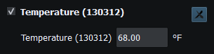
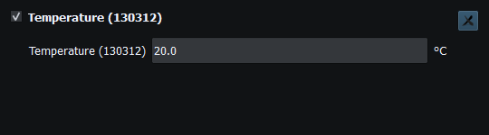
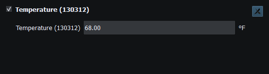

Canonical properties preserve the engineering values used by persistence, bindings and encoders. Preferred display units affect presentation and supported user entry; they do not redefine the model's units.
| Quantity | Typical canonical representation | Display considerations |
|---|---|---|
| Temperature | Kelvin | °C/°F/K preference, field-specific precision/range |
| Distance/XTE | Metres, signed where defined | Feet/miles/nautical units; preserve negative and zero |
| Speed | Metres/second | Knots, mph or selected preference |
| Heading/angles | Radians | Degrees with true/magnetic/reference context |
| Pressure | Pascals | PSI/hPa and field-specific unit conventions |
| Coordinates | Degrees, double precision | Selected decimal/degrees-minutes form; presentation rounding is not serialization rounding |
| Protocol time/date | Field-defined seconds/days from epoch | UTC date/time; unavailable values remain unavailable |
Read each property's Units/Type columns rather than assuming every numeric row uses a preferred unit. Structured editors and enum/code fields preserve their own semantics. Datum codes retain exact canonical text including valid unlisted codes. Object Tree applies field-specific precision; it must not write rounded text back to the Property Editor.
Intermediate text can exist while typing. Enter/focus loss commits valid input or restores the current value, including a newer RX/generator value received during editing. Empty, malformed, out-of-range and unavailable inputs follow each field's policy. Valid negative temperatures and zero XTE are not errors merely because they are non-positive.

Figure 95. A canonical 293.15 K measurement displayed in the selected temperature units. Click to enlarge.
Figure 96. 293.15 K displayed in Kelvin. Click to enlarge.

Figure 97. The same temperature displayed as 20.0 °C. Click to enlarge.

Figure 98. The same temperature displayed as 68.00 °F. Click to enlarge.
NMEA PGNs and Sentences · Security and Privacy · Licensing and Credits · Using RayNmeaSimulator Safely · Connection Troubleshooting · Enable, Dispatch and Sending · Route Overview